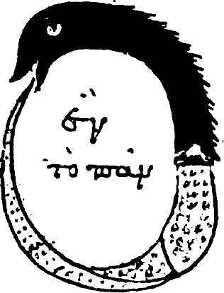
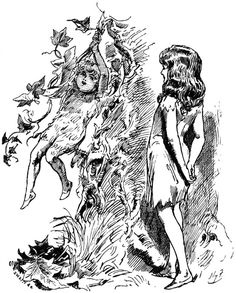
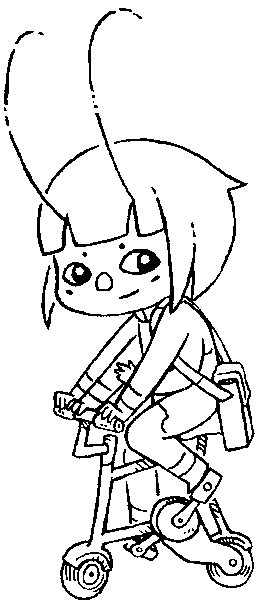

Drifblim is strong enough to lift Pokemon or people but has no control over its flight. This causes it to drift with the wind and end up anywhere.
Here's a list of small self-hosted development tools:
Here are some implementation tools:
| Stack | Version | ||
|---|---|---|---|
| Uxn | 0K | ||
| Uxntal | 54K | ||
| Varvara | 79K | ||
This assembler is written in Uxntal(54K) itself, and is designed to help bootstrap the ecosystem. It outputs a symbols file and expects the standard Uxntal Notation. An assembler transforms a textual source file into a binary program file, it is the tool that transforms a tal file, into a rom file.

The assembler comes in one of three flavors:
To use the terminal version:
uxncli drifblim.rom source.tal output.rom
If no arguments are provided to Drifblim, it will try to read a file .drifblim, in which each argument is separated by a linebreak of a tab, it's possible to assemble multiple roms at once:
drifblim
src/project_a.tal src/project_a.rom src/project_b.tal src/project_b.rom
Drifblim is strong enough to lift Pokemon or people but has no control over its flight. This causes it to drift with the wind and end up anywhere.
The steps below recover a working assembler from a hexdump and verify it reproduces itself. Since the assembler is written in the language it is assembling, you have a few choices:
If you are unable to assemble your own copy of Drifblim, lost its source file, or simply want to make sure that the assembler is unaltered, you will need the hexadecimal data of drifblim.rom. Here are some portable tools to help with the bootstrapping process:
First off, you need a way to create binary files from hex dumps. If you don't have access to xxd, you can paste the following line in a text file, and run a hex dump through it:
FAFAFXFZFwfaalFBFAAFFZFZXVGfoAAFXFZFFXXfoKgaam&/$AAAFXJgaam&/AFAAFXFFZZDYJF$/FXAKF|Bgaam/AAFXFZFXgBFAYXFEF|BGGoGAFAFXFZDYFEF|B/DAAFX_gBAGYgDAAFXFXAXZEEZXGPgBAAFXFFZZ_]GQFAPGA^GAQFAPgaamFPGAAFXFXFFXXW
cat drifblim.rom.txt | uxncli xh.txt > drifblim.rom
At this point, you have recovered your own drifblim.rom from a hex dump. The next step is to make a new drifblim.rom from its source code, using the newly assembled rom.
uxncli drifblim.rom drifblim.tal.txt drifblim2.rom
Note that in Uxntal, hexadecimal numbers are valid code and so any rom can be recovered from a hex dump with a working assembler.
Finally, we should have two identical roms of the assembler, where one was assembled from the textual source. If for some reason you do not have access to the unix diff command, you can compare the two hexadecimal dumps with the checksum, which takes two filepaths and compare their content.
uxncli drifblim.rom checksum.tal.txt checksum.rom uxncli checksum.rom drifblim.rom drifblim2.rom
1fa03ffb drifblim.rom 1fa03ffb drifblim2.rom
Alternatively, if your Varvara implementation does not support the File device, use the Drifloon assembler(tal/rom). To validate your own assembler, see the tests, and disassemble the result with uxndis.
At this point, you have verified that Drifblim assembles itself correctly, assuming that uxncli is trustworthy. Now, let's remove that assumption. uxnmin.tal is a complete Uxn virtual machine, written in Uxntal. It's small enough to audit from its hexdump against the Uxn specification:
cat uxnmin.rom.txt | uxncli xh.txt > uxnmin.rom
Next, we'll use Drifloon for this part, let's assemble it:
cat drifloon.rom.txt | uxncli xh.txt > drifloon.rom
Run Drifloon inside uxnmin and verify that it produces an identical assembler:
cat drifloon.tal.txt | uxncli uxnmin.rom drifloon.rom > drifloon2.rom uxncli checksum.rom drifloon.rom drifloon2.rom
566fd630 drifloon.rom 566fd630 drifloon2.rom
Lastly, verify that uxnmin assembles itself through that inner assembler:
cat uxnmin.tal.txt | uxncli uxnmin.rom drifloon.rom > uxnmin2.rom uxncli checksum.rom uxnmin.rom uxnmin2.rom
8f815450 uxnmin.rom 8f815450 uxnmin2.rom
The assembler and the virtual machine are each a witness to the other. If both comparisons pass, the trust boundary is the hexdump of uxnmin.rom(1kb). Everything above it is verified by the chain.
Mymosh the Selfbegotten, who had neither mother nor father, but was son unto himself, for his father was Coincidence, and his Mother — Entropy.
The following libraries are in the standard Drifblim style. If you discover faster and smaller helpers, please get in touch with me.
This self-replicating program will emit its own bytecode when run:
@q ( -> ) ;&end ;q &l LDAk #18 DEO INC2 GTH2k ?&l &end
uxnasm src.tal seed.rom && uxncli seed.rom > res.rom
This cyclical self-replicating program will emit a program that prints ying and which emits a program like itself that will print yang, which in turn will emit a program that prints ying again, and so forth:
@y ( -> ) [ LIT2 "y 19 ] DEO [ LIT2 &c "ai ] SWPk ,&c STR2 #19 DEO [ LIT2 "n 19 ] DEO [ LIT2 "g 19 ] DEO ;&end ;y &w LDAk #18 DEO INC2 GTH2k ?&w &end
uxnasm yingyang.tal ying.rom && uxncli ying.rom > yang.rom
This quine program will emit a second program that emits its own bytecode as hexadecimal ascii characters, which is also a valid program source:
a001 32a0 0100 b460 000b a020 1817 2121 aa20 fff2 0004 6000 0006 8004 1f60 0000 800f 1c06 8009 0a80 271a 1880 3018 8018 176c
uxnasm src.tal seed.rom && uxncli seed.rom > src.tal
This ambigram program executes the same backward or forward, every single opcode is evaluated, and prints the palindrome "tenet". It is my entry to BGGP1:
1702 a018 a002 a074 a002 0417 1702 a018 a002 a065 a002 0417 1702 a018 a002 a06e a002 a018 a002 1717 0402 a065 a002 a018 a002 1717 0402 a074 a002 a018 a002 17
uxnasm src.tal turnstile.rom && uxncli turnstile.rom
This short ambigram prints "6" and halts.
80 c5 36 17 36 c5 80
uxnasm 6.tal 6.rom && uxncli 6.rom
This cursed ambigram also prints "6", but will only work at exactly 54 minutes and 18 seconds, any hour of the day. It is my entry to BGGP6:
80 c5 36 17 36 c5 80
uxnasm 6c.tal 6c.rom && uxncli 6c.rom
This self-replicating program produces exactly 1 copy of itself, names the copy "4", does not execute the copied file, and prints the number 4. It is my 19 bytes entry to BGGP4:
|a0 @File &vector $2 &success $2 &stat $2 &delete $1 &append $1 &name $2 &length $2 &read $2 &write $2 |100 [ LIT2 13 -File/length ] DEO2 INC [ LIT2 -&filename -File/name ] DEO2 INC SWP .File/write DEO2 [ LIT2 "4 18 ] DEO &filename "4
uxnasm src.tal seed.rom && uxncli seed.rom

This polyglot program is both a valid tga image, and a valid rom that will print that same image. It is my entry to BGGP2
|20 @Screen &vector $2 &width $2 &height $2 &auto $1 &pad $1 &x $2 &y $2 &addr $2 &pixel $1 &sprite $1 |100 @length [ 40 ] @header [ 01 01 ] @color-map [ 0000 3000 20 ] [ 0000 1000 1000 1000 0820 ] @description $40 @color-map-data [ 0000 00ff ffff ffff $aa !program $b ] @body [ 0101 0101 0101 0100 0001 0101 0101 0101 0101 0101 0101 0000 0000 0101 0101 0101 0101 0101 0100 0000 0000 0001 0101 0101 0101 0101 0100 0101 0101 0001 0101 0101 0101 0101 0100 0101 0101 0001 0101 0101 0101 0101 0100 0001 0100 0001 0101 0101 0101 0101 0101 0001 0100 0101 0101 0101 0101 0101 0000 0101 0101 0000 0101 0101 0101 0100 0101 0101 0101 0101 0001 0101 0101 0100 0100 0101 0101 0101 0001 0101 0101 0100 0100 0101 0101 0001 0001 0101 0101 0100 0101 0001 0101 0001 0001 0101 0101 0101 0001 0001 0100 0100 0101 0101 0101 0100 0100 0001 0100 0001 0001 0101 0101 0001 0101 0101 0101 0101 0100 0101 0101 0000 0000 0000 0000 0000 0000 0101 ] @program ( -> ) ( print 2 ) [ LIT2 "2 18 DEO ] ( | draw tga ) #0010 DUP2 .Screen/width DEO2 .Screen/height DEO2 #0f08 DEOk INC INC DEOk INC INC DEO #0000 &>l ( -- ) DUP2 #0f AND .Screen/x DEO2 DUP2 #04 SFT .Screen/y DEO2 DUP2 ;body ADD2 LDA .Screen/pixel DEO INC DUP ?&>l POP2
uxnasm src.tal mothra.tga && gimp mothra.tga
This maze program ensnares one into the iconic Commodore 64 demo:
( seed ) #c5 DEI2 ,&seed STR2
[ LIT2 "/\ ] #f800
&>w ( -- )
( break ) DUP #3f AND ?{ #0a18 DEO }
( seed ) OVR2 [ LIT2 &seed &x $1 &y $1 ]
( randx ) ADDk #50 SFT EOR DUP #03 SFT EOR DUP ,&x STR
( randy ) SUBk #01 SFT EOR EOR DUP ,&y STR
( emit ) #01 AND [ LIT POP ] ADD [ #00 STR $1 ] #18 DEO
INC2 ORAk ?&>w
POP2 POP2
uxnasm src.tal res.rom && uxncli res.rom
DUP EOR ORA
This program unlocks the scorching power to create COMEFROM statements at runtime and prints exclamation marks in an infinite loop:
( 10 ) ;&label COMEFROM
( 20 ) [ LIT2 "! 18 ] DEO
( 30 ) &label $4
( 40 ) BRK
@COMEFROM ( label* -- )
( LIT2 ) STH2k [ LIT LIT2 ] STH2kr STA
( JMP2 ) INC2r INC2r INC2r [ LIT JMP2 ] STH2r STA
( addr* ) STH2kr SWP2 INC2 STA2
JMP2r
uxnasm src.tal res.rom && uxncli res.rom
This program compiles caret-prefixed Brainfuck directly into uxntal using nothing but macros:
%> ( m* -- m* ) { INC2 }
%< ( m* -- m* ) { #0001 SUB2 }
%^+ ( m* -- m* ) { STH2k LDAk INC STH2r STA }
%^- ( m* -- m* ) { STH2k LDAk #01 SUB STH2r STA }
%^. ( m* -- m* ) { LDAk #18 DEO }
%^[ ( m* -- m* ) { #00 JSR LDAk #00 EQU ?{ }
%^] ( m* -- m* ) { LDAk #00 EQU ?{ JMP2kr }\ }\ }
@on-reset ( -> ) ;memory ^+ ^+ ^+ ^[ ^. ^- ^] ^. BRK
@memory
uxnasm bf.tal res.rom && uxncli res.rom
LITr 00 JSRr

Converting a relative label to an absolute one:
LITr 00 JSRr #0008 ADD2 LIT2 00 _&label ADD2
Inspired by Marvin Borner's Many Factorials in Bruijn.
@fac-classic ( n -- res )
DUP ?{ INC JMP2r }
DUP #01 SUB fac-classic MUL JMP2r
@fac-keep ( n -- res )
#01 GTHk ?{ NIP JMP2r }
OVR SWP SUB fac-keep MUL JMP2r
@fac-tail ( n -- res )
#01 &rec ( n acc -- res )
OVR ?{ NIP JMP2r }
OVR MUL #0100 SUB2 !&rec
@fac-algol ( n -- res )
#00 STZ
#00 LDZ #00 EQU ?{
#00 LDZ
#00 LDZ #01 SUB fac-algol
MUL JMP2r }
#01 JMP2r
@fac-bitwise ( n -- res )
DUP ?{ #01 !/add }
DUP #ff /add fac-bitwise
&mul ( x y -- res )
DUP ?{ NIP JMP2r }
#ff /add OVR /mul
&add ( x y -- res )
DUP ?{ POP JMP2r }
ANDk #10 SFT STH EOR STHr !/add
%fac-obfuscate ( n -- res ) {
8001 0780 0008 2000 0907
1aa0 0100 3940 fff0 0300 }
The formatter expects the standard Uxntal Notation, sometimes called Drifblim-style.
If a routine is printing, drawing, or sometimes ingesting all of its arguments, the routine can be wrapped within angular brackets to indicate that it should end a line.
@<emit-num> ( num* -- ) LIT "0 ADD .Console/write DEO JMP2r
If a label should not be accessed from outside its scope, it is indicated by the &+name convention.
@scope/get-value ( -- value ) [ LIT &+value $1 ] JMP2r @scope/set-value ( value -- ) ,&+value STR JMP2r @main ( -> ) ;scope/+value LDA ( uxnlin will throw a warning ) POP BRK
Block widths can be specified by using a number next with the opening bracket:
@three-items-wide [3 a b c d e f g h i ] @four-items-wide [4 a b c e d e f g h i ]
Program validation is done at compile-time by comparing a routine's stack effect, against the resulting balance of all stack changes occurring in the routine's code. Words that do not pass the stack-checker are generating a warning, and so essentially this defines a very basic and permissive type system that nevertheless catches some invalid programs and enables compiler optimizations. For more details, see Uxnbal.
The simplest case is when a piece of code does not have any branches or recursion, and merely pushes literals and calls words. The stack effect routines is always known statically from the declaration.
@add-eight ( a -- a+8 ) #0008 ADD JMP2r
Working-stack imbalance of +1, in add-eight.
In the case of branching, each branch is evaluated and if an imbalance occurs inside one of the branches, the branch name is indicated:
@branching ( a* -- c ) LDAk #01 EQU ?&one LDAk #02 EQU ?&two POP2 #ff JMP2r &one ( a* -- c ) POP2 #12 JMP2r &two ( a* -- c d ) ADD JMP2r
Working-stack imbalance of -1, in branching/two.
In the case of a recursion, the validator will use the stack effect instead of repeatedly walking through the body of the routine.
@print-string ( str* -- )
LDAk DUP ?{ POP POP2 JMP2r }
emit-letter
INC2 !print-string
For loops that exits without affecting the stack depth, a > prefixed label is used as a shorthand to reduce the need for extraneous stack effect definitions in cases where it can be inferred:
@many-times ( a -- ) DUP &>l INC DUP ?&>l POP2 JMP2r
Routines that pull items from the stack beyond their allowed depth will also raise a warning, making the stack effect act a sort of boundary:
@shallow ( a -- ) POP2 JMP2r
Working-stack depth error of 1, in shallow.
Lastly, a runtime specific solution to validate the stack state at any one point during the execution of a program, is to read the System/wst port and compare it against a given stack pointer byte value.
@on-reset ( -> )
#abcd DUP2
.System/wst DEI #05 EQU ?{
#01 .System/debug DEO }
BRK
It finds known patterns in Uxntal(54K) programs that can be optimized, or that are unsafe.
Bicycle is a little Uxntal interpreter designed for teach the language in front of an audience. Bicycle allows you to vizualize source code next to its equivalent bytecode and step through the evaluation.
To launch Bicycle as a companion application, you need just pipe the
left.rom instance of uxnemu to the one of
bicycle.rom. Left can send both a selection of text to be
evaluated, or the entire working tal file, by pressing ctrl+p. The
result should be instantly displayed in the Bicycle window.
uxnemu left.rom | uxnemu bicycle.rom

As an alternative, to experiment with Uxntal you can also use the web-based REPL.
Inspired from Uxn32's fantastic debugger, Beetbug is a step debugger for Varvara, written in Uxntal. It is the perfect tool to step through a running program. It uses Varvara's Console write port to print debug to the interface, and the System's debug port to put a breakpoint.
Beetbug supports symbol files, and will highlight both the return address on top of the return stack, and the address on top of the working stack, giving you a visual indication of the addresses that are being accessed.
Launch beetbug with the target rom to debug:
uxnemu beetbug.rom some_project.rom
Beetbug will evaluate the reset vector, starting at 0100, until a BRK is reached, to pause evaluation, you can use the System's debug port as follow:
#010e DEO